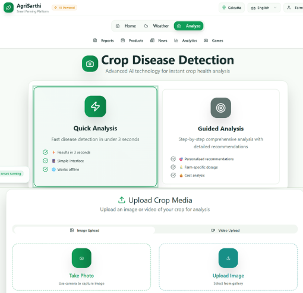
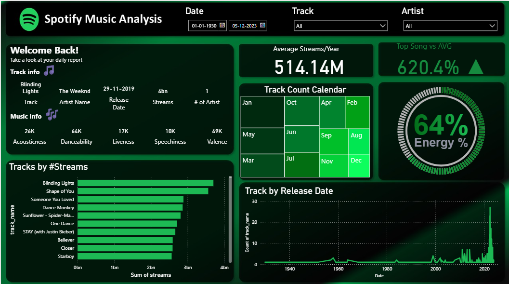

Building intelligent systems that solve real-world problems — from GenAI agriculture platforms to deep learning forecasting and explainable AI pipelines.
I'm an AI/ML Engineer and Data Scientist currently pursuing my M.Sc. in Data Science at NMIMS Mumbai (CGPA: 8.73/10). I specialize in designing and deploying machine learning systems that bridge the gap between advanced research and real-world business value.
My expertise spans Generative AI, Computer Vision, Time Series Forecasting, Explainable AI, and MLOps — backed by hands-on project delivery across agriculture intelligence, financial analytics, fraud detection, and logistics optimization.
I believe the best AI systems are those that are interpretable, scalable, and production-ready. Every model I build is grounded in business context: What problem does it solve? How does it create value? Can it be deployed and maintained?
From data pipelines to deployed models — covering the complete ML lifecycle.
12 production-oriented projects spanning GenAI, deep learning, analytics, and MLOps.


Explore source code, notebooks, and documentation for all 12+ AI/ML projects.
I'm actively seeking AI/ML Engineer, Data Scientist, and GenAI Developer roles. Open to full-time positions, internships, and research collaborations.